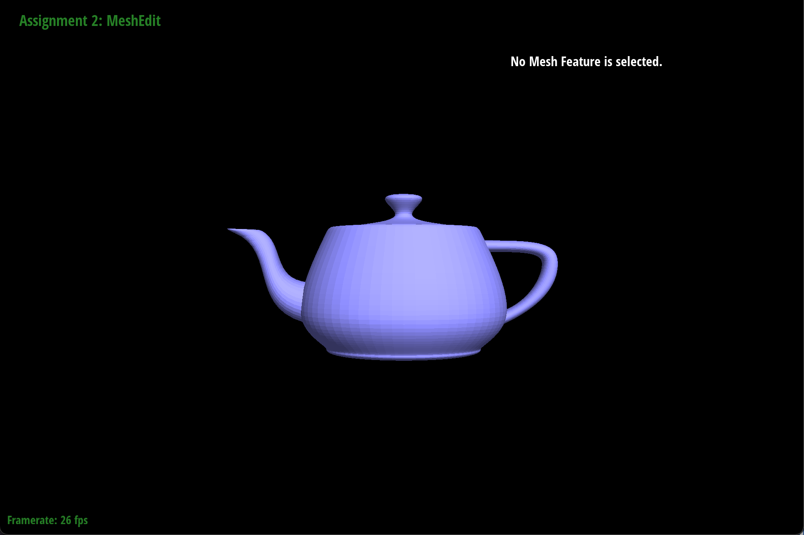
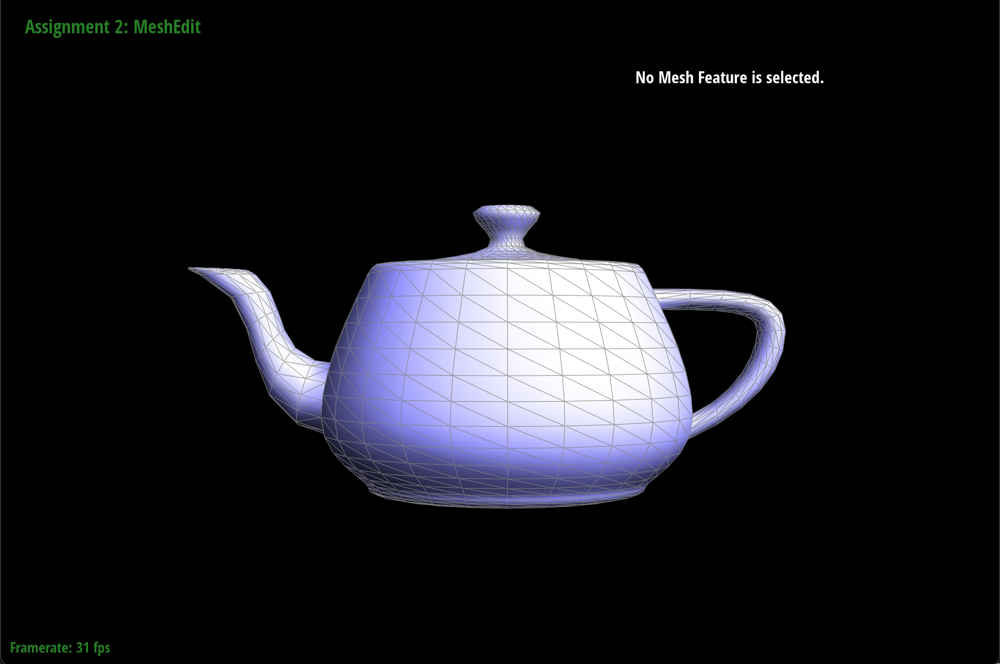
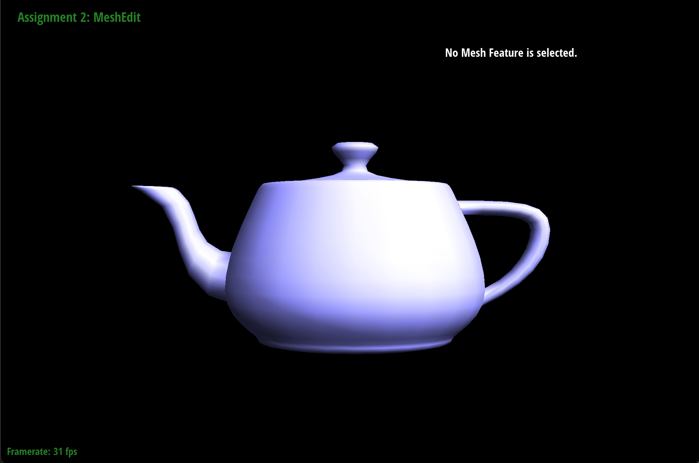
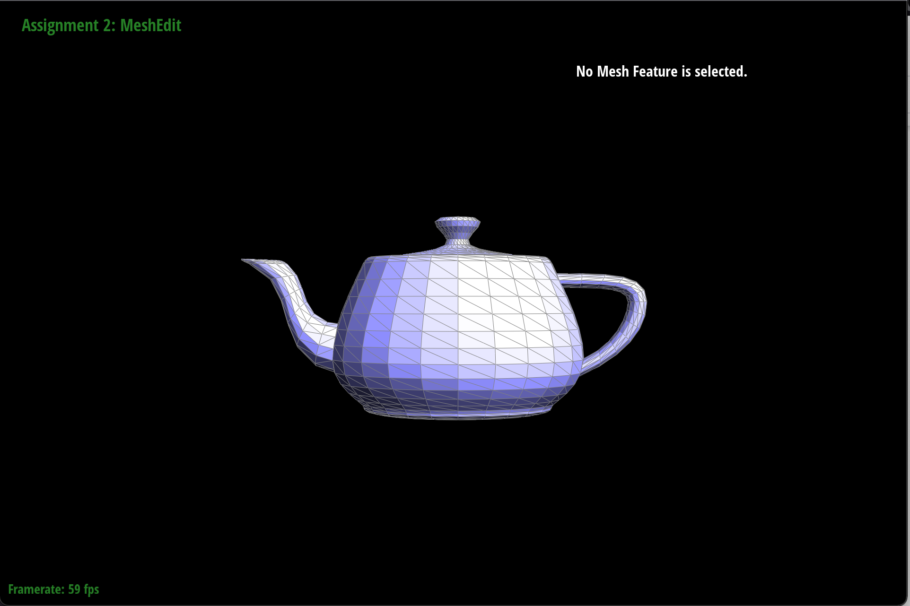
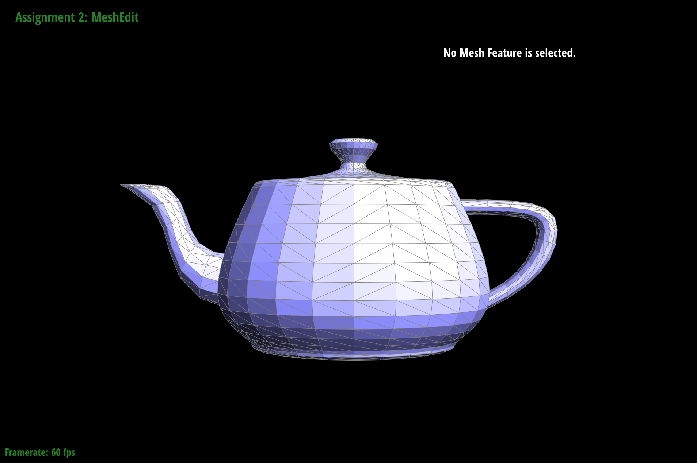
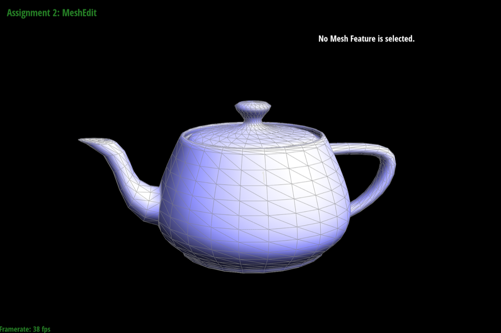
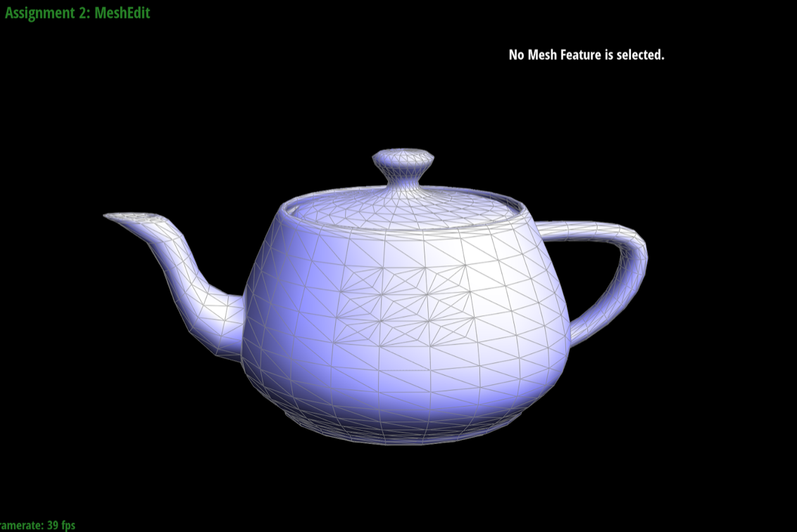
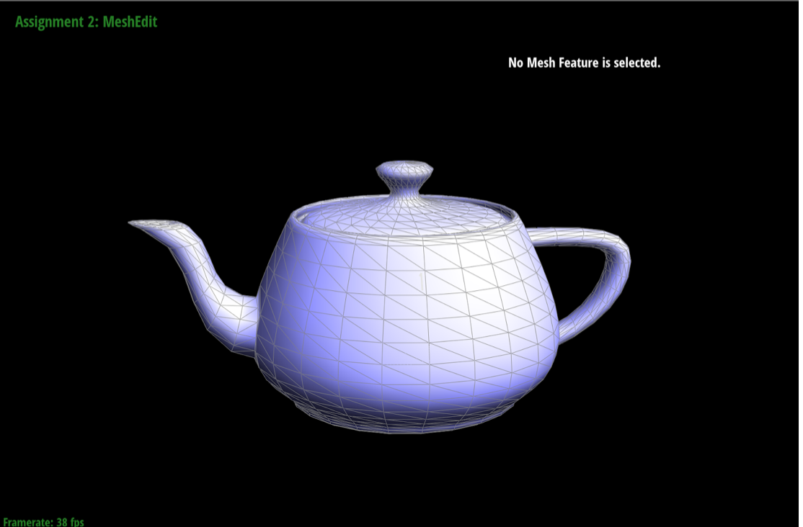
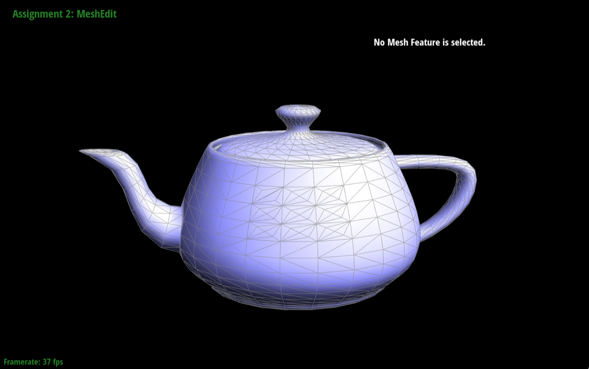

Using the number of control points that we were given, we insert a point on each edge using linear interpolation, and then we connect those points to create a shape with one less edge. Specifically, we incorporate the algorithm: next_point = (1-t)p_i + tp_i+1, in order to get the next set of points(which would be 1 smaller). We repeat this until we get it down to one point.
Slightly Different:
De Casteljau algorithm can extend to Bezier surfaces by applying the algorithm several times in order to fully evaluate the algorithm to get a vector of points at t. Therefore, we can conclude that after applying de Casteljau algorithm several times to fully evaluate it, the points that we return would be the corresponding points on the Bezier surface, allowing us to successfully draw the teapot below.
We implemented the area-weighted vertex normals by first initializing a Vector3D of all 0s. This is so that we can store the sum of the normals of the triangles surrounding the current vertex. Then, as we traverse through each of the vertexs neighbors, we took the cross product of two neighboring vertices. I added the result of the cross product to my initialized Vector3D. And then we returned the unit vector of our Vector3D.
Before:
After:
Before:
After:
To implement edge flip, we first collected all the necessary half-edges, vertices, edges, and faces. Then with a picture that we had drawn, we changed the neighbors of all the collected half-edges, vertices, edges, and faces to correctly simulate an edge flip. We made sure not to delete or create any new component. Not sure if this is considered “debugging trick”, but we decided to draw out the half-edge data structures and personally label all the half-edges, vertices, edges, and faces that we had use in this section, It made it easier to double check that we were setting the neighbors correctly and convenient for looking back.
We were very fortunate that we didnt experience any drastic bug issues, but we did forget to keep track of where each of our half edges, vertices, etc and thus we ended up setting the neighbors (and other parameters) incorrectly. To fix this, we decided to use the half-edge data structure image as a reference and label on a separate piece of paper. After doing this, it was easier to keep track of all the data structures and eventually set them correctly.
Before:
After:
Our approach in implementing this function was similar, if not identical to how we implemented edge flip. However, this time, we needed to create new half-edges, vertices, edges, and faces to label once we had split our edges.
Thanks to our decision to draw out the half-edge data structure diagram, we didn’t experience any problems while implementing the edge split function. However, to note, me and my partner drew different diagrams so the naming conventions are different.
Before Splits:
After Splits:
Before Edge Splits and Flips:
After Edge Splits and Flips:
In our implementation of the loop subdivision, we used both the 5 parts that were given to us in the documentation as well as implementation notes given in the website specs as guidance on how to approach this function.
For each vertex, we calculated and stored the new vertex position into the newPosition variable by using this equation given in the specs:
(1 - n * u) * original_position + u * original_neighbor_position_sum
Where n is the vertex degree and u = 3/16 when n = 3 and 3/(n*8) otherwise.
Then for each edge, we computed the updated vertex position associated with edges and stored into the newPosition variable by using this equation given in the specs:
3/8 * (A + B) + 1/8 * (C + D)
Where A, B, C, D are the different vertices when splitting on edge AB.
Then we looped through the edges to see if any of the edges needed to be split or flipped via the functions that we implemented in Part 4 and 5.
Lastly, we replace all the vertex positions that we had temporarily stored in the newPosition variable.
The sharp corners and edges start to become smoother and asymmetrical. However, we do notice that it doesnt smooth out as nice as we want it to with certain parts of the cube looking perky. This is because the edge doesnt divide our face symmetrically and by pre-processing our cube and split it prior to our loop subdivision, we can get a much smoother cube after supersampling.
Before, when it had a single edge going across each face of the sube, it ended up creating a triangle that wasnt very symmetrical when supersampled upon. By splitting the middle edge on each face as part of the pre-processing phase, we are able to create much more asymmetric edge faces along each face of the cube. This is why our cube smoothes out much better with our pre-processing.
Web PageLink is : https://cal-cs184-student.github.io/sp22-project-webpages-jimkang126/